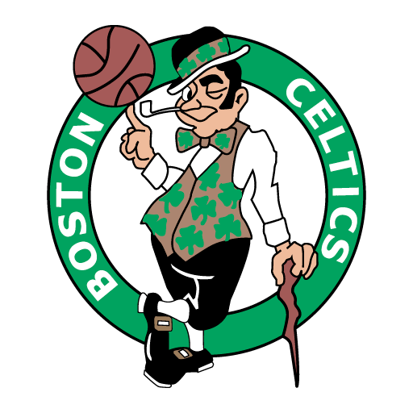

Fale conosco!
Nova temporada!
Veja os três times que tem a maior chance de ganhar esta temporada:
1-
Golden state Warriors:
que foi a campeã do ano passado.
2-
Boston Celtics
: Ficou com o segundo lugar na liga.

3-
Milwaukee Bucks
: Um dos melhores times da atualidade que ficou em terceiro lugar em 2021.
Confira as datas marcantes
24 de setembro - Início dos treinos de pré-temporada 30 de setembro - Início dos jogos de pré-temporada
17 de outubro - Definição oficial dos elencos 18 de outubro - Abertura da temporada regular
24-28 de janeiro - Semana das Rivalidades
9 de fevereiro - Data-limite para trocas de jogadores 17-19 de fevereiro - Fim de semana do All-Star Game
9 de abril - Último dia da temporada regular 11-14 de abril - Torneio de repescagem (Play-in) 15 de abril - Início dos playoffs
1º de junho - Jogo 1 das Finais da NBA 18 de junho - Jogo 7 das Finais da NBA (se necessário) 22 de junho - Draft 2023
Menu